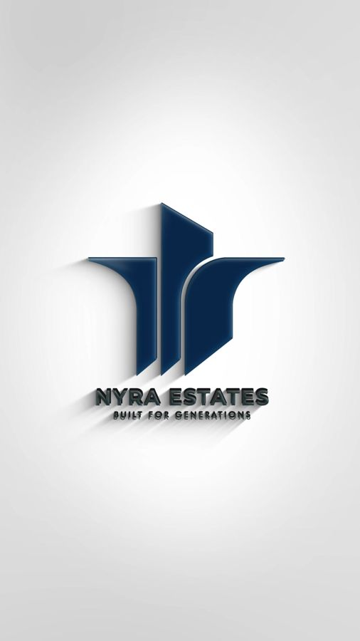
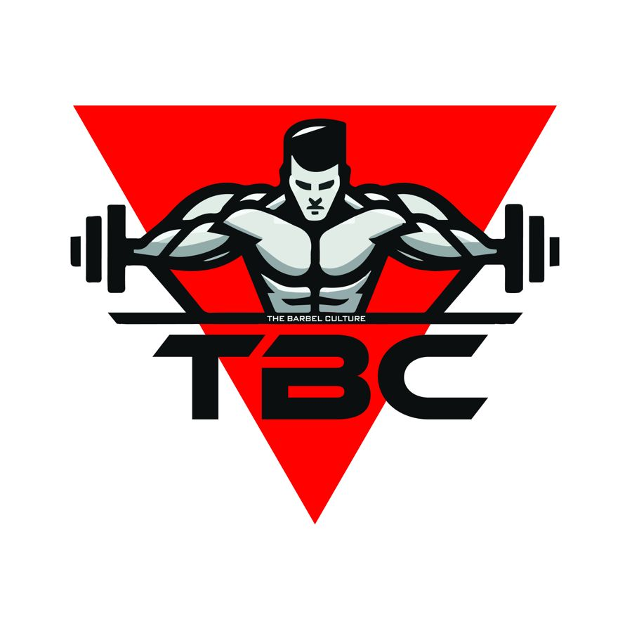

Akash S GPortfolio 2026
Hi there
I build websites, systems and content that help businesses grow.
Akash
I build websites and systems that solve real business problems and the content that makes them famous
About
- Services
- Website design and marketing
- Experience
- Since 2017
- Projects
- 15+ shipped
- Availability
- Taking on new projects
Because
I'm Akash. I build websites and systems that solve real business problems: bookings, orders, payments, the WhatsApp bot that answers at midnight, and the content that brings people in.
Every build starts from how the business actually works, not from a template. A pickleball club, a meal kitchen, a training institute, a manufacturer: their systems run every day. One person, start to live.
What you're here for (I guess)
Work
01/12
Visit site
Also made
Reels, logos, posters
WhatsApp booking reel
Shot and edited
Logo animation

